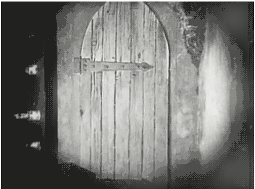

Puerta de la entrada
Muy bien has conseguido encontrar la casa. Pero aún estas a tiempo de dar media vuelta. Si te atreves a continuar solo tienes que llamar a la puerta. Si por el contrario no eres lo suficientemente valiente puedes cerrar el navegador e irte por donde has venido.
Hagas lo que hagas no se lo contaremos a nadie, aunque no podemos confirmar si algún espíritu de la casa te ha visto ya... Les encanta perseguir a las personas mientras duermen...

More Website Templates @ Templates.com!